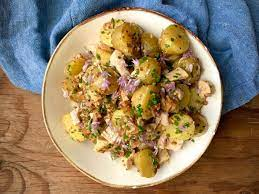

Tuna Salad

Description
This is delicious, healthy and simple tuna salad recipe for those who are trying to eat well with very little time to cook.
This recipe serves 4
Ingredients
- 2 oz fingerling potatoes or small red potatoes
- 0 oz French green beans, trimmed
- 6 oz small tomatoes (such as campari tomatoes or small Roma tomatoes), cut into wedges
- ⅓ cup pearl red onions or small shallots, quartered
- 15 oz can quality tuna
- 2 to 3 large garlic cloves, minced
- Salt and pepper
- 1 tsp smoked paprika (more to your liking)
- ¾ tsp cumin (more to your liking)
- ½ tsp crushed red pepper flakes
- ⅓ cup Early Harvest Greek extra virgin olive oil
- 3 tbsp white wine vinegar
- 6 oz spring greens or butter lettuce
Steps
- Place fingerling potatoes in a large pot and cover well with water. Boil for 10 minutes or until you are able to stick a fork through potatoes. Using a slotted spoon, remove potatoes from boiling water and transfer to a plate for now. Do not discard water.
- Prepare a large bowl with iced water and set aside near the pot.
- In the same cooking pot, with the water boiling, add green beans. Cook 4 minutes or so. Drain, and immediately place the green beans in the bowl with the iced water (ice bath) to stop cooking (this helps them keep their vivid green color too.) When cooled enough, remove green beans from ice bath and pat dry.
- Cut fingerling potatoes in halves length-wise, and place them in a large mixing bowl. Add green beans, tomatoes, onions (or shallots), tuna (crumble it up a bit before adding), and garlic.
- Season with salt, pepper, paprika, cumin, and crushed red pepper. Combine Early Harvest EVOO and vinegar then add to the salad. Give everything a gentle toss making sure all the ingredients are well-coated. Taste and adjust seasoning or add more smoked paprika, cumin, or crushed red pepper to your liking (remember, flavors meld with time.)
- Assemble spring greens or butter lettuce on a nice platter. Arrange the salad on top. Enjoy!